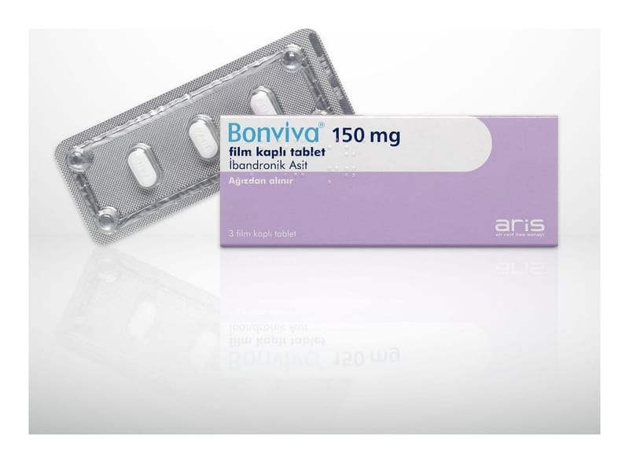

Bonviva 150 mg Film Kaplı Tablet, 3 Adet

Ne için kullanılır
KT · Bölüm 1BONVİVA, bisfosfonatlar olarak bilinen ilaç grubunun bir üyesi olan ibandronik asit içerir. BONVİVA, çoğu kad ında bir fark görmeseler veya hissetmeseler bile, daha fazla kemik kaybını durdurarak ve kemik kütlesini art ırarak, kemik kayb ını tersine çevirebilir. BONVİVA, kemiklerde kırılma riskini azaltmaya yardımcı olabi lir. K ırıklardaki bu azalma, omurga için gösterilmiştir, ancak kalça i çin gösterilmemiştir .
BONVİVA, 1 ve 3 film kaplı tabletlik bli ster ambalajlarda bulunmaktadır. Tabletler beyaz ila beyazımsı renkte, bir tarafından ‘‘BNVA’’ diğer tarafında ‘‘150 mg’’ baskılı oblong şekillidir.
BONVİVA size, kırık riskinizde artış olduğundan, osteoporoz tedavisi amacıyla reçete edilmiştir. Osteo poroz, menopoz sonrasında kadınlarda yaygın olan, kemiklerdeki incelme ve zayıflamadır. Menopozda kadın yumurtalıkları, iskelet yapısını sağlıklı tutmaya yardımcı olan kadınlık hormonu östrojenin üretimine son verir.
Bir kadın ne kadar erken menopoza girerse, osteoporozda kırık riski de o kadar artar. Kırık riskini artırabilecek diğer faktörler aşağıdaki gibidir: • beslenme düzeninde yeterince kalsiyum ve D vitamini bulunmaması • sigara veya çok fazla alkol tüketimi • yeterince yürümeme veya ağırlık kaldırma egzers izi yapmama • aile de osteoporoz öyküsü
Sağlıklı bir yaşam biçimi, tedavinizden en yüksek faydayı sağlamanıza yardımcı olacaktır. Sağl ıklı yaşam biçimine; • kalsiyum ve D vitamini açısından zengin dengeli bir beslenme düzeni, • yürüme veya başka herhangi bir ağırlık kaldırma egzersizi yapma, • sigara ve çok fazla alkol kullanmama dahildir.